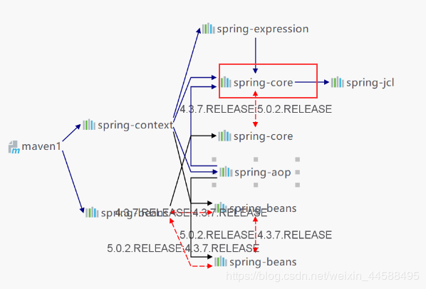
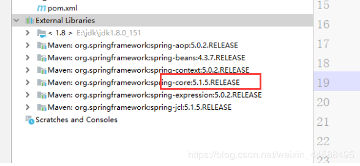
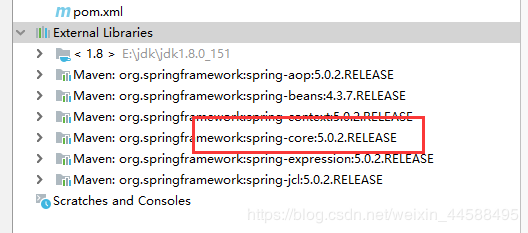

<!DOCTYPE html>
<html>
<head><meta name="generator" content="Hexo 3.9.0">
  <meta charset="utf-8">
  
  <!-- maven高级之jar包冲突、标签 | Zesystem&#39;blog -->
  <title>Zesystem's  Space</title>
  <meta name="viewport" content="width=device-width, initial-scale=1, maximum-scale=1">
  <meta name="keywords" content="This is Zesystem's blog.">
  <!-- 
  
    <meta name="keywords" content="MinHow,MinHow's Blog" />
    -->
  <meta name="description" content="回顾基础、解决jar包冲突的三种方式、以及maven的标签讲解。">
<meta name="keywords" content="基础,解决jar包冲突,标签">
<meta property="og:type" content="article">
<meta property="og:title" content="maven高级之jar包冲突、标签">
<meta property="og:url" content="https://zesystem.github.io/2019/08/07/maven高级之jar包冲突、标签/index.html">
<meta property="og:site_name" content="Zesystem&#39;blog">
<meta property="og:description" content="回顾基础、解决jar包冲突的三种方式、以及maven的标签讲解。">
<meta property="og:locale" content="default">
<meta property="og:image" content="https://zesystem.github.io/2019/08/07/maven高级之jar包冲突、标签/20190807103056829.png">
<meta property="og:image" content="https://zesystem.github.io/2019/08/07/maven高级之jar包冲突、标签/20190807103544319.png">
<meta property="og:image" content="https://zesystem.github.io/2019/08/07/maven高级之jar包冲突、标签/20190807103659593.png">
<meta property="og:updated_time" content="2019-08-07T02:56:27.763Z">
<meta name="twitter:card" content="summary">
<meta name="twitter:title" content="maven高级之jar包冲突、标签">
<meta name="twitter:description" content="回顾基础、解决jar包冲突的三种方式、以及maven的标签讲解。">
<meta name="twitter:image" content="https://zesystem.github.io/2019/08/07/maven高级之jar包冲突、标签/20190807103056829.png">
  
  
    <link rel="icon" href="/favicon.ico">
  
  <link href="//cdn.bootcss.com/font-awesome/4.7.0/css/font-awesome.min.css" rel="stylesheet" type="text/css">
  <link rel="stylesheet" href="/css/style.css">
  <script src="/js/pace.min.js"></script>
  

  
	<script>
	var _hmt = _hmt || [];
	(function() {
	  var hm = document.createElement("script");
	  hm.src = "//hm.baidu.com/hm.js?true";
	  var s = document.getElementsByTagName("script")[0]; 
	  s.parentNode.insertBefore(hm, s);
	})();
	</script>

  
  <div style="display: none;">
    <script src="//s22.cnzz.com/z_stat.php?id=true&web_id=true" language="JavaScript"></script>
  </div>


</head>
</html>
<body>
  <div id="container">
      <header id="header">
    <div id="banner"></div>
    <div id="header-outer">
        <div id="header-menu" class="header-menu-pos animated">
            <div class="header-menu-container">
                <a href="/" class="left">
                    <span class="site-title">Zesystem</span>
                </a>
                <nav id="header-menu-nav" class="right">
                    
                    <a  href="/">
                        <i class="fa fa-home"></i>
                        <span>我的家</span>
                    </a>
                    
                    <a  href="/archives">
                        <i class="fa fa-archive"></i>
                        <span>干货s</span>
                    </a>
                    
                    <a  href="/about">
                        <i class="fa fa-user"></i>
                        <span>关于me</span>
                    </a>
                    
                </nav>
                <a class="mobile-header-menu-button">
                    <i class="fa fa-bars"></i>
                </a>
            </div>
        </div>
        <div id="header-row">
            <div id="logo">
                <a href="/">
                    
                </a>
            </div>
            <div class="header-info">
                <div id="header-title">
                    
                    <h2>
                        Zesystem
                    </h2>
                    
                </div>
                <div id="header-description">
                    
                    <h3>
                        不平凡的人生需要走不平凡的路
                    </h3>
                    
                </div>
            </div>
            <nav class="header-nav">
                <div class="social">
                    
                        <a title="CSDN" target="_blank" href="https://blog.csdn.net/weixin_44588495">
                            <i class="fa fa-home fa-2x"></i></a>
                    
                        <a title="Github" target="_blank" href="https://github.com/Zesystem">
                            <i class="fa fa-github fa-2x"></i></a>
                    
                        <a title="2502266520"  ">
                            <i class="fa fa-qq fa-2x"></i></a>
                    
                </div>
            </nav>
        </div>
    </div>
</header>
      <div class="outer">
        <section id="main" class="body-wrap"><article id="post-maven高级之jar包冲突、标签" class="article article-type-post" itemscope itemprop="blogPost">
  <div class="article-inner">
    
      <header class="article-header">
        
  
    <h1 class="post-title" itemprop="name">
      maven高级之jar包冲突、标签
    </h1>
    <div class="post-title-bar">
      <ul>
          
              <li>
                  <i class="fa fa-book"></i>
                  
                      <a href="/categories/maven高级/">maven高级</a>
                  
              </li>
          
        <li>
          <i class="fa fa-calendar"></i>  2019-08-07
        </li>
        <li>
          <i class="fa fa-eye"></i>
          <span id="busuanzi_value_page_pv"></span>
        </li>
      </ul>
    </div>
  

          
      </header>
    
    <div class="article-entry post-content" itemprop="articleBody">
      
            
            <p>回顾基础、解决jar包冲突的三种方式、以及maven的标签讲解。</p>
<a id="more"></a>
<h3 id="1、maven基础"><a href="#1、maven基础" class="headerlink" title="1、maven基础"></a>1、maven基础</h3><ul>
<li>maven是一个项目管理工具。<h4 id="依赖管理"><a href="#依赖管理" class="headerlink" title="依赖管理"></a>依赖管理</h4></li>
<li>maven对项目中的jar包的管理过程，传统工程我们直接把jarb包放置在项目中。</li>
<li>maven工程真正的jarb包放置在仓库中，项目中只用放置jar包的坐标。<h4 id="仓库的种类"><a href="#仓库的种类" class="headerlink" title="仓库的种类"></a>仓库的种类</h4></li>
<li>本地仓库：在我们本机上的maven仓库。</li>
<li>远程仓库【私服】：一般是公司的仓库。</li>
<li>中央仓库：类似于阿里源或者<a href="https://mvnrepository.com/。" target="_blank" rel="noopener">https://mvnrepository.com/。</a><h4 id="仓库之间的关系"><a href="#仓库之间的关系" class="headerlink" title="仓库之间的关系"></a>仓库之间的关系</h4>当我们启动一个maven工程时，maven工程会通过pom文件中jar包的坐标去本地仓库找对应的jar包下载<br>默认情况下，如果本地仓库没有对应的jar包，maven工程会自动去中央仓库下载jar包到本地仓库。<br>在公司中，如果本地没有对应的jar包，会先从私服下载jar包。<br>如果私服中没有jar包，可以从中央仓库下载，也可以从本地上传。<h4 id="maven命令"><a href="#maven命令" class="headerlink" title="maven命令"></a>maven命令</h4></li>
<li>一键构建：maven自身集成了tomcat插件，可以对项目j进行编译、测试、打包、安装发布等操作。</li>
<li>maven常用命令：clean清理、compile编译、test测试、package打包、install安装、deploy打包上传到私服。</li>
<li>maven三套生命周期：清理生命周期、默认生命周期、站点生命周期。<h4 id="修改web-xml"><a href="#修改web-xml" class="headerlink" title="修改web.xml"></a>修改web.xml</h4></li>
<li>我们在IDEA或者eclipse创建一个maven工程后，这个工程的web.xml是需要我们修改的，这个并不符合我们原本的项目，我们需要需要添加一些约束。<figure class="highlight xml"><table><tr><td class="gutter"><pre><span class="line">1</span><br><span class="line">2</span><br><span class="line">3</span><br><span class="line">4</span><br><span class="line">5</span><br><span class="line">6</span><br><span class="line">7</span><br><span class="line">8</span><br><span class="line">9</span><br><span class="line">10</span><br></pre></td><td class="code"><pre><span class="line"><span class="meta">&lt;!DOCTYPE web-app PUBLIC</span></span><br><span class="line"><span class="meta"> "-//Sun Microsystems, Inc.//DTD Web Application 2.3//EN"</span></span><br><span class="line"><span class="meta"> "http://java.sun.com/dtd/web-app_2_3.dtd" &gt;</span></span><br><span class="line"><span class="tag">&lt;<span class="name">web-app</span> <span class="attr">xmlns</span>=<span class="string">"http://java.sun.com/xml/ns/javaee"</span></span></span><br><span class="line"><span class="tag">         <span class="attr">xmlns:xsi</span>=<span class="string">"http://www.w3.org/2001/XMLSchema-instance"</span></span></span><br><span class="line"><span class="tag">         <span class="attr">xsi:schemaLocation</span>=<span class="string">"http://java.sun.com/xml/ns/javaee</span></span></span><br><span class="line"><span class="tag"><span class="string">        http://java.sun.com/xml/ns/javaee/web-app_3_0.xsd"</span></span></span><br><span class="line"><span class="tag">         <span class="attr">version</span>=<span class="string">"3.0"</span>&gt;</span></span><br><span class="line">    <span class="tag">&lt;<span class="name">display-name</span>&gt;</span>Archetype Created Web Application<span class="tag">&lt;/<span class="name">display-name</span>&gt;</span></span><br><span class="line"><span class="tag">&lt;/<span class="name">web-app</span>&gt;</span></span><br></pre></td></tr></table></figure>

</li>
</ul>
<h3 id="2、解决maven导入jar包冲突"><a href="#2、解决maven导入jar包冲突" class="headerlink" title="2、解决maven导入jar包冲突"></a>2、解决maven导入jar包冲突</h3><h4 id="直接依赖和传递依赖"><a href="#直接依赖和传递依赖" class="headerlink" title="直接依赖和传递依赖"></a>直接依赖和传递依赖</h4><ul>
<li>直接依赖：项目中直接导入的jar包，就是该项目的直接依赖包。<ul>
<li>传递依赖：项目中没有直接导入的jar包，可以通过项目直接依赖jar包传递到项目中去。</li>
</ul>
</li>
<li>这里同时引入了两个包，但是这个包里有一个传递依赖spring-bean，它的版本跟直接依赖包是相同的，也就说有两个spring-bean依赖包，一个是5.0.2.RELEASE，另一个是4.3.7.RELEASE。那么这样就产生了冲突，究竟是哪一个导入了项目呢。还是都导入了项目？</li>
</ul>
<figure class="highlight xml"><table><tr><td class="gutter"><pre><span class="line">1</span><br><span class="line">2</span><br><span class="line">3</span><br><span class="line">4</span><br><span class="line">5</span><br><span class="line">6</span><br><span class="line">7</span><br><span class="line">8</span><br><span class="line">9</span><br><span class="line">10</span><br><span class="line">11</span><br><span class="line">12</span><br></pre></td><td class="code"><pre><span class="line"><span class="tag">&lt;<span class="name">dependencies</span>&gt;</span></span><br><span class="line">  <span class="tag">&lt;<span class="name">dependency</span>&gt;</span></span><br><span class="line">    <span class="tag">&lt;<span class="name">groupId</span>&gt;</span>org.springframework<span class="tag">&lt;/<span class="name">groupId</span>&gt;</span></span><br><span class="line">    <span class="tag">&lt;<span class="name">artifactId</span>&gt;</span>spring-context<span class="tag">&lt;/<span class="name">artifactId</span>&gt;</span></span><br><span class="line">    <span class="tag">&lt;<span class="name">version</span>&gt;</span>5.0.2.RELEASE<span class="tag">&lt;/<span class="name">version</span>&gt;</span></span><br><span class="line">  <span class="tag">&lt;/<span class="name">dependency</span>&gt;</span> </span><br><span class="line">  <span class="tag">&lt;<span class="name">dependency</span>&gt;</span></span><br><span class="line">    <span class="tag">&lt;<span class="name">groupId</span>&gt;</span>org.springframework<span class="tag">&lt;/<span class="name">groupId</span>&gt;</span></span><br><span class="line">    <span class="tag">&lt;<span class="name">artifactId</span>&gt;</span>spring-beans<span class="tag">&lt;/<span class="name">artifactId</span>&gt;</span></span><br><span class="line">    <span class="tag">&lt;<span class="name">version</span>&gt;</span>4.3.7.RELEASE<span class="tag">&lt;/<span class="name">version</span>&gt;</span></span><br><span class="line">  <span class="tag">&lt;/<span class="name">dependency</span>&gt;</span></span><br><span class="line"><span class="tag">&lt;/<span class="name">dependencies</span>&gt;</span></span><br></pre></td></tr></table></figure>

<p></p>
<ul>
<li>大家可以看看项目存在的包：项目中引入的是5.0.2.RELEASE版本的。为什么呢？<h4 id="解决方法："><a href="#解决方法：" class="headerlink" title="解决方法："></a>解决方法：</h4><h5 id="第一声明优先原则"><a href="#第一声明优先原则" class="headerlink" title="第一声明优先原则"></a>第一声明优先原则</h5></li>
<li>哪个jar包的坐标靠上的位置，这个jar包就是先声明的。先声明的jar包坐标下的依赖包，可以优先进入项目 。<h5 id="通过直接依赖"><a href="#通过直接依赖" class="headerlink" title="通过直接依赖"></a>通过直接依赖</h5></li>
<li>直接引入spring-bean的jar包。直接依赖要比传递依赖的优先级高。<figure class="highlight xml"><table><tr><td class="gutter"><pre><span class="line">1</span><br><span class="line">2</span><br><span class="line">3</span><br><span class="line">4</span><br><span class="line">5</span><br><span class="line">6</span><br><span class="line">7</span><br><span class="line">8</span><br><span class="line">9</span><br><span class="line">10</span><br><span class="line">11</span><br><span class="line">12</span><br><span class="line">13</span><br><span class="line">14</span><br><span class="line">15</span><br><span class="line">16</span><br><span class="line">17</span><br></pre></td><td class="code"><pre><span class="line"><span class="tag">&lt;<span class="name">dependencies</span>&gt;</span></span><br><span class="line">  <span class="tag">&lt;<span class="name">dependency</span>&gt;</span></span><br><span class="line">    <span class="tag">&lt;<span class="name">groupId</span>&gt;</span>org.springframework<span class="tag">&lt;/<span class="name">groupId</span>&gt;</span></span><br><span class="line">    <span class="tag">&lt;<span class="name">artifactId</span>&gt;</span>spring-context<span class="tag">&lt;/<span class="name">artifactId</span>&gt;</span></span><br><span class="line">    <span class="tag">&lt;<span class="name">version</span>&gt;</span>5.0.2.RELEASE<span class="tag">&lt;/<span class="name">version</span>&gt;</span></span><br><span class="line">  <span class="tag">&lt;/<span class="name">dependency</span>&gt;</span></span><br><span class="line">  <span class="tag">&lt;<span class="name">dependency</span>&gt;</span></span><br><span class="line">    <span class="tag">&lt;<span class="name">groupId</span>&gt;</span>org.springframework<span class="tag">&lt;/<span class="name">groupId</span>&gt;</span></span><br><span class="line">    <span class="tag">&lt;<span class="name">artifactId</span>&gt;</span>spring-beans<span class="tag">&lt;/<span class="name">artifactId</span>&gt;</span></span><br><span class="line">    <span class="tag">&lt;<span class="name">version</span>&gt;</span>4.3.7.RELEASE<span class="tag">&lt;/<span class="name">version</span>&gt;</span></span><br><span class="line">  <span class="tag">&lt;/<span class="name">dependency</span>&gt;</span></span><br><span class="line">  <span class="tag">&lt;<span class="name">dependency</span>&gt;</span></span><br><span class="line">    <span class="tag">&lt;<span class="name">groupId</span>&gt;</span>org.springframework<span class="tag">&lt;/<span class="name">groupId</span>&gt;</span></span><br><span class="line">    <span class="tag">&lt;<span class="name">artifactId</span>&gt;</span>spring-core<span class="tag">&lt;/<span class="name">artifactId</span>&gt;</span></span><br><span class="line">    <span class="tag">&lt;<span class="name">version</span>&gt;</span>5.1.5.RELEASE<span class="tag">&lt;/<span class="name">version</span>&gt;</span></span><br><span class="line">  <span class="tag">&lt;/<span class="name">dependency</span>&gt;</span></span><br><span class="line"><span class="tag">&lt;/<span class="name">dependencies</span>&gt;</span></span><br></pre></td></tr></table></figure>

</li>
</ul>
<p></p>
<h5 id="直接排除法（工作中常用）"><a href="#直接排除法（工作中常用）" class="headerlink" title="直接排除法（工作中常用）"></a>直接排除法（工作中常用）</h5><ul>
<li>当我们要排除某一个jar包下的依赖包，在配置&lt;exclusion&gt;时，内部可以不用写版本号。默认版本号和直接依赖包是一样的。<figure class="highlight xml"><table><tr><td class="gutter"><pre><span class="line">1</span><br><span class="line">2</span><br><span class="line">3</span><br><span class="line">4</span><br><span class="line">5</span><br><span class="line">6</span><br><span class="line">7</span><br><span class="line">8</span><br><span class="line">9</span><br><span class="line">10</span><br><span class="line">11</span><br><span class="line">12</span><br><span class="line">13</span><br><span class="line">14</span><br><span class="line">15</span><br><span class="line">16</span><br><span class="line">17</span><br><span class="line">18</span><br></pre></td><td class="code"><pre><span class="line"><span class="tag">&lt;<span class="name">dependencies</span>&gt;</span></span><br><span class="line">  <span class="tag">&lt;<span class="name">dependency</span>&gt;</span></span><br><span class="line">    <span class="tag">&lt;<span class="name">groupId</span>&gt;</span>org.springframework<span class="tag">&lt;/<span class="name">groupId</span>&gt;</span></span><br><span class="line">    <span class="tag">&lt;<span class="name">artifactId</span>&gt;</span>spring-context<span class="tag">&lt;/<span class="name">artifactId</span>&gt;</span></span><br><span class="line">    <span class="tag">&lt;<span class="name">version</span>&gt;</span>5.0.2.RELEASE<span class="tag">&lt;/<span class="name">version</span>&gt;</span></span><br><span class="line">  <span class="tag">&lt;/<span class="name">dependency</span>&gt;</span></span><br><span class="line">  </span><br><span class="line">  <span class="tag">&lt;<span class="name">dependency</span>&gt;</span></span><br><span class="line">    <span class="tag">&lt;<span class="name">groupId</span>&gt;</span>org.springframework<span class="tag">&lt;/<span class="name">groupId</span>&gt;</span></span><br><span class="line">    <span class="tag">&lt;<span class="name">artifactId</span>&gt;</span>spring-beans<span class="tag">&lt;/<span class="name">artifactId</span>&gt;</span></span><br><span class="line">    <span class="tag">&lt;<span class="name">version</span>&gt;</span>4.3.7.RELEASE<span class="tag">&lt;/<span class="name">version</span>&gt;</span></span><br><span class="line">    <span class="tag">&lt;<span class="name">exclusions</span>&gt;</span></span><br><span class="line">      <span class="tag">&lt;<span class="name">exclusion</span>&gt;</span></span><br><span class="line">        <span class="tag">&lt;<span class="name">groupId</span>&gt;</span>org.springframework<span class="tag">&lt;/<span class="name">groupId</span>&gt;</span></span><br><span class="line">        <span class="tag">&lt;<span class="name">artifactId</span>&gt;</span>spring-core<span class="tag">&lt;/<span class="name">artifactId</span>&gt;</span></span><br><span class="line">      <span class="tag">&lt;/<span class="name">exclusion</span>&gt;</span></span><br><span class="line">    <span class="tag">&lt;/<span class="name">exclusions</span>&gt;</span></span><br><span class="line">  <span class="tag">&lt;/<span class="name">dependency</span>&gt;</span></span><br></pre></td></tr></table></figure>

</li>
</ul>
<p></p>
<h3 id="3、pom-xml内的标签"><a href="#3、pom-xml内的标签" class="headerlink" title="3、pom.xml内的标签"></a>3、pom.xml内的标签</h3><h4 id="添加tomcat插件"><a href="#添加tomcat插件" class="headerlink" title="添加tomcat插件"></a>添加tomcat插件</h4><figure class="highlight xml"><table><tr><td class="gutter"><pre><span class="line">1</span><br><span class="line">2</span><br><span class="line">3</span><br><span class="line">4</span><br><span class="line">5</span><br><span class="line">6</span><br><span class="line">7</span><br><span class="line">8</span><br><span class="line">9</span><br></pre></td><td class="code"><pre><span class="line"><span class="tag">&lt;<span class="name">build</span>&gt;</span></span><br><span class="line">  <span class="tag">&lt;<span class="name">plugins</span>&gt;</span></span><br><span class="line">    <span class="tag">&lt;<span class="name">plugin</span>&gt;</span></span><br><span class="line">      <span class="tag">&lt;<span class="name">groupId</span>&gt;</span>org.apache.tomcat.maven<span class="tag">&lt;/<span class="name">groupId</span>&gt;</span></span><br><span class="line">      <span class="tag">&lt;<span class="name">artifactId</span>&gt;</span>tomcat7-maven-plugin<span class="tag">&lt;/<span class="name">artifactId</span>&gt;</span></span><br><span class="line">      <span class="tag">&lt;<span class="name">version</span>&gt;</span>2.2<span class="tag">&lt;/<span class="name">version</span>&gt;</span></span><br><span class="line">    <span class="tag">&lt;/<span class="name">plugin</span>&gt;</span></span><br><span class="line">  <span class="tag">&lt;/<span class="name">plugins</span>&gt;</span></span><br><span class="line"><span class="tag">&lt;/<span class="name">build</span>&gt;</span></span><br></pre></td></tr></table></figure>

<h4 id="锁定jar包版本（只是锁定，不是引入）"><a href="#锁定jar包版本（只是锁定，不是引入）" class="headerlink" title="锁定jar包版本（只是锁定，不是引入）"></a>锁定jar包版本（只是锁定，不是引入）</h4><ul>
<li>maven工程是可以分父子依赖关系的。凡是依赖别的项目后，拿到别的项目的依赖包，都属于传递依赖。</li>
<li>比如：当前A项目，被B项目所依赖，那么我们A项目中所有 jar包都会传递B项目中。<br>B项目开发者，如果再在B项目中导入一套ssm框架的jar包，对于B项目是直接依赖。<br>那么直接依赖的jar包，就会把我们A项目传递过去的jar包覆盖掉。</li>
<li>为了防止以上情况的出现，我们可以把A项目中主要的jar包的坐标锁住，那么其他依赖该项目的项目中，<br>即便是有同名jar包直接依赖，也无法覆盖 。</li>
</ul>
<figure class="highlight xml"><table><tr><td class="gutter"><pre><span class="line">1</span><br><span class="line">2</span><br><span class="line">3</span><br><span class="line">4</span><br><span class="line">5</span><br><span class="line">6</span><br><span class="line">7</span><br><span class="line">8</span><br></pre></td><td class="code"><pre><span class="line"><span class="tag">&lt;<span class="name">dependencyManagement</span>&gt;</span></span><br><span class="line">  <span class="tag">&lt;<span class="name">dependencies</span>&gt;</span></span><br><span class="line">    <span class="tag">&lt;<span class="name">dependency</span>&gt;</span></span><br><span class="line">      <span class="tag">&lt;<span class="name">groupId</span>&gt;</span><span class="tag">&lt;/<span class="name">groupId</span>&gt;</span></span><br><span class="line">      <span class="tag">&lt;<span class="name">artifactId</span>&gt;</span><span class="tag">&lt;/<span class="name">artifactId</span>&gt;</span></span><br><span class="line">    <span class="tag">&lt;/<span class="name">dependency</span>&gt;</span></span><br><span class="line">  <span class="tag">&lt;/<span class="name">dependencies</span>&gt;</span></span><br><span class="line"><span class="tag">&lt;/<span class="name">dependencyManagement</span>&gt;</span></span><br></pre></td></tr></table></figure>

<h4 id="添加依赖"><a href="#添加依赖" class="headerlink" title="添加依赖"></a>添加依赖</h4><ul>
<li>在这里添加所需要依赖的jar包的坐标，然后maven就会去本地仓库获取。<figure class="highlight xml"><table><tr><td class="gutter"><pre><span class="line">1</span><br><span class="line">2</span><br><span class="line">3</span><br><span class="line">4</span><br><span class="line">5</span><br><span class="line">6</span><br><span class="line">7</span><br><span class="line">8</span><br><span class="line">9</span><br><span class="line">10</span><br><span class="line">11</span><br><span class="line">12</span><br></pre></td><td class="code"><pre><span class="line"><span class="tag">&lt;<span class="name">dependencies</span>&gt;</span></span><br><span class="line">  <span class="tag">&lt;<span class="name">dependency</span>&gt;</span></span><br><span class="line">    <span class="tag">&lt;<span class="name">groupId</span>&gt;</span>org.springframework<span class="tag">&lt;/<span class="name">groupId</span>&gt;</span></span><br><span class="line">    <span class="tag">&lt;<span class="name">artifactId</span>&gt;</span>spring-context<span class="tag">&lt;/<span class="name">artifactId</span>&gt;</span></span><br><span class="line">    <span class="tag">&lt;<span class="name">version</span>&gt;</span>5.0.2.RELEASE<span class="tag">&lt;/<span class="name">version</span>&gt;</span></span><br><span class="line">  <span class="tag">&lt;/<span class="name">dependency</span>&gt;</span> </span><br><span class="line">  <span class="tag">&lt;<span class="name">dependency</span>&gt;</span></span><br><span class="line">    <span class="tag">&lt;<span class="name">groupId</span>&gt;</span>org.springframework<span class="tag">&lt;/<span class="name">groupId</span>&gt;</span></span><br><span class="line">    <span class="tag">&lt;<span class="name">artifactId</span>&gt;</span>spring-beans<span class="tag">&lt;/<span class="name">artifactId</span>&gt;</span></span><br><span class="line">    <span class="tag">&lt;<span class="name">version</span>&gt;</span>4.3.7.RELEASE<span class="tag">&lt;/<span class="name">version</span>&gt;</span></span><br><span class="line">  <span class="tag">&lt;/<span class="name">dependency</span>&gt;</span></span><br><span class="line"><span class="tag">&lt;/<span class="name">dependencies</span>&gt;</span></span><br></pre></td></tr></table></figure>

</li>
</ul>
<h4 id="统一管理jar包版本"><a href="#统一管理jar包版本" class="headerlink" title="统一管理jar包版本"></a>统一管理jar包版本</h4><figure class="highlight xml"><table><tr><td class="gutter"><pre><span class="line">1</span><br><span class="line">2</span><br><span class="line">3</span><br><span class="line">4</span><br><span class="line">5</span><br><span class="line">6</span><br><span class="line">7</span><br><span class="line">8</span><br><span class="line">9</span><br><span class="line">10</span><br></pre></td><td class="code"><pre><span class="line"><span class="tag">&lt;<span class="name">properties</span>&gt;</span></span><br><span class="line">  <span class="tag">&lt;<span class="name">project.build.sourceEncoding</span>&gt;</span>UTF-8<span class="tag">&lt;/<span class="name">project.build.sourceEncoding</span>&gt;</span></span><br><span class="line">  <span class="tag">&lt;<span class="name">maven.compiler.source</span>&gt;</span>1.8<span class="tag">&lt;/<span class="name">maven.compiler.source</span>&gt;</span></span><br><span class="line">  <span class="tag">&lt;<span class="name">maven.compiler.target</span>&gt;</span>1.8<span class="tag">&lt;/<span class="name">maven.compiler.target</span>&gt;</span></span><br><span class="line">  <span class="tag">&lt;<span class="name">spring.version</span>&gt;</span>5.0.2.RELEASE<span class="tag">&lt;/<span class="name">spring.version</span>&gt;</span></span><br><span class="line">  <span class="tag">&lt;<span class="name">slf4j.version</span>&gt;</span>1.6.6<span class="tag">&lt;/<span class="name">slf4j.version</span>&gt;</span></span><br><span class="line">  <span class="tag">&lt;<span class="name">log4j.version</span>&gt;</span>1.2.12<span class="tag">&lt;/<span class="name">log4j.version</span>&gt;</span></span><br><span class="line">  <span class="tag">&lt;<span class="name">mysql.version</span>&gt;</span>5.1.6<span class="tag">&lt;/<span class="name">mysql.version</span>&gt;</span></span><br><span class="line">  <span class="tag">&lt;<span class="name">mybatis.version</span>&gt;</span>3.4.5<span class="tag">&lt;/<span class="name">mybatis.version</span>&gt;</span></span><br><span class="line"><span class="tag">&lt;/<span class="name">properties</span>&gt;</span></span><br></pre></td></tr></table></figure>


            <div class="post-copyright">
    <div class="content">
        <p>最后更新： 2019年08月07日 10:56</p>
        <p>原始链接： <a class="post-url" href="/2019/08/07/maven高级之jar包冲突、标签/" title="maven高级之jar包冲突、标签">https://zesystem.github.io/2019/08/07/maven高级之jar包冲突、标签/</a></p>
        <footer>
            <a href="https://zesystem.github.io">
                
                Zesystem
            </a>
        </footer>
    </div>
</div>

      
        
            
<div class="page-reward">
    <a id="rewardBtn" href="javascript:;">赏</a>
</div>

<div id="reward" class="post-modal reward-lay">
    <a class="close" href="javascript:;" id="reward-close">×</a>
    <span class="reward-title">
        <i class="icon icon-quote-left"></i>
        请我吃糖~
        <i class="icon icon-quote-right"></i>
    </span>
    <div class="reward-content">
        
        <div class="reward-code">
            
        </div>
        <div class="reward-select">
            
            <label class="reward-select-item checked" data-id="wechat" data-wechat="/images/wechat_code.jpg">
                
            </label>
            
            
            <label class="reward-select-item" data-id="alipay" data-alipay="/images/alipay_code.jpg">
                
            </label>
            
        </div>
    </div>
</div>


        
    </div>
    <footer class="article-footer">
        
        
<div class="post-share">
    <a href="javascript:;" id="share-sub" class="post-share-fab">
        <i class="fa fa-share-alt"></i>
    </a>
    <div class="post-share-list" id="share-list">
        <ul class="share-icons">
          <li>
            <a class="weibo share-sns" target="_blank" href="http://service.weibo.com/share/share.php?url=https://zesystem.github.io/2019/08/07/maven高级之jar包冲突、标签/&title=《maven高级之jar包冲突、标签》 — Zesystem'blog&pic=/images/maven.png" data-title="微博">
              <i class="fa fa-weibo"></i>
            </a>
          </li>
          <li>
            <a class="weixin share-sns" id="wxFab" href="javascript:;" data-title="微信">
              <i class="fa fa-weixin"></i>
            </a>
          </li>
          <li>
            <a class="qq share-sns" target="_blank" href="http://connect.qq.com/widget/shareqq/index.html?url=https://zesystem.github.io/2019/08/07/maven高级之jar包冲突、标签/&title=《maven高级之jar包冲突、标签》 — Zesystem'blog&source=回顾基础、解决jar包冲突的三种方式、以及maven的标签讲解。" data-title="QQ">
              <i class="fa fa-qq"></i>
            </a>
          </li>
          <li>
            <a class="facebook share-sns" target="_blank" href="https://www.facebook.com/sharer/sharer.php?u=https://zesystem.github.io/2019/08/07/maven高级之jar包冲突、标签/" data-title="Facebook">
              <i class="fa fa-facebook"></i>
            </a>
          </li>
          <li>
            <a class="twitter share-sns" target="_blank" href="https://twitter.com/intent/tweet?text=《maven高级之jar包冲突、标签》 — Zesystem'blog&url=https://zesystem.github.io/2019/08/07/maven高级之jar包冲突、标签/&via=https://zesystem.github.io" data-title="Twitter">
              <i class="fa fa-twitter"></i>
            </a>
          </li>
          <li>
            <a class="google share-sns" target="_blank" href="https://plus.google.com/share?url=https://zesystem.github.io/2019/08/07/maven高级之jar包冲突、标签/" data-title="Google+">
              <i class="fa fa-google-plus"></i>
            </a>
          </li>
        </ul>
     </div>
</div>
<div class="post-modal wx-share" id="wxShare">
    <a class="close" href="javascript:;" id="wxShare-close">×</a>
    <p>扫一扫，分享到微信</p>
    
</div>

<div class="mask"></div>

        
        <ul class="article-footer-menu">
            
            
  <li class="article-footer-tags">
    <i class="fa fa-tags"></i>
      
    <a href="/tags/基础/" class="color3">基础</a>
      
    <a href="/tags/解决jar包冲突/" class="color4">解决jar包冲突</a>
      
    <a href="/tags/标签/" class="color3">标签</a>
      
  </li>

        </ul>
        
    </footer>
  </div>
</article>


    <aside class="post-toc-pos post-toc-top" id="post-toc">
        <nav class="post-toc-wrap">
            <ol class="post-toc"><li class="post-toc-item post-toc-level-3"><a class="post-toc-link" href="#1、maven基础"><span class="post-toc-text">1、maven基础</span></a><ol class="post-toc-child"><li class="post-toc-item post-toc-level-4"><a class="post-toc-link" href="#依赖管理"><span class="post-toc-text">依赖管理</span></a></li><li class="post-toc-item post-toc-level-4"><a class="post-toc-link" href="#仓库的种类"><span class="post-toc-text">仓库的种类</span></a></li><li class="post-toc-item post-toc-level-4"><a class="post-toc-link" href="#仓库之间的关系"><span class="post-toc-text">仓库之间的关系</span></a></li><li class="post-toc-item post-toc-level-4"><a class="post-toc-link" href="#maven命令"><span class="post-toc-text">maven命令</span></a></li><li class="post-toc-item post-toc-level-4"><a class="post-toc-link" href="#修改web-xml"><span class="post-toc-text">修改web.xml</span></a></li></ol></li><li class="post-toc-item post-toc-level-3"><a class="post-toc-link" href="#2、解决maven导入jar包冲突"><span class="post-toc-text">2、解决maven导入jar包冲突</span></a><ol class="post-toc-child"><li class="post-toc-item post-toc-level-4"><a class="post-toc-link" href="#直接依赖和传递依赖"><span class="post-toc-text">直接依赖和传递依赖</span></a></li><li class="post-toc-item post-toc-level-4"><a class="post-toc-link" href="#解决方法："><span class="post-toc-text">解决方法：</span></a><ol class="post-toc-child"><li class="post-toc-item post-toc-level-5"><a class="post-toc-link" href="#第一声明优先原则"><span class="post-toc-text">第一声明优先原则</span></a></li><li class="post-toc-item post-toc-level-5"><a class="post-toc-link" href="#通过直接依赖"><span class="post-toc-text">通过直接依赖</span></a></li><li class="post-toc-item post-toc-level-5"><a class="post-toc-link" href="#直接排除法（工作中常用）"><span class="post-toc-text">直接排除法（工作中常用）</span></a></li></ol></li></ol></li><li class="post-toc-item post-toc-level-3"><a class="post-toc-link" href="#3、pom-xml内的标签"><span class="post-toc-text">3、pom.xml内的标签</span></a><ol class="post-toc-child"><li class="post-toc-item post-toc-level-4"><a class="post-toc-link" href="#添加tomcat插件"><span class="post-toc-text">添加tomcat插件</span></a></li><li class="post-toc-item post-toc-level-4"><a class="post-toc-link" href="#锁定jar包版本（只是锁定，不是引入）"><span class="post-toc-text">锁定jar包版本（只是锁定，不是引入）</span></a></li><li class="post-toc-item post-toc-level-4"><a class="post-toc-link" href="#添加依赖"><span class="post-toc-text">添加依赖</span></a></li><li class="post-toc-item post-toc-level-4"><a class="post-toc-link" href="#统一管理jar包版本"><span class="post-toc-text">统一管理jar包版本</span></a></li></ol></li></ol>
        </nav>
    </aside>
    

<nav id="article-nav">
  
    <a href="/2019/08/08/Java：三大框架整合搭建SSM框架/" id="article-nav-newer" class="article-nav-link-wrap">

      <span class="article-nav-title">
        <i class="fa fa-hand-o-left" aria-hidden="true"></i>
        
          Java：三大框架整合搭建SSM框架
        
      </span>
    </a>
  
  
    <a href="/2019/08/05/java方法参数的传递方式：按值转递/" id="article-nav-older" class="article-nav-link-wrap">
      <span class="article-nav-title">java方法参数的传递方式：按值转递</span>
      <i class="fa fa-hand-o-right" aria-hidden="true"></i>
    </a>
  
</nav>


    
        <div id="SOHUCS" sid="maven高级之jar包冲突、标签" ></div>
<script type="text/javascript">
    (function(){
        var appid = 'true';
        var conf = 'true';
        var width = window.innerWidth || document.documentElement.clientWidth;
        if (width < 960) {
            window.document.write('<script id="changyan_mobile_js" charset="utf-8" type="text/javascript" src="https://changyan.sohu.com/upload/mobile/wap-js/changyan_mobile.js?client_id=' + appid + '&conf=' + conf + '"><\/script>'); } else { var loadJs=function(d,a){var c=document.getElementsByTagName("head")[0]||document.head||document.documentElement;var b=document.createElement("script");b.setAttribute("type","text/javascript");b.setAttribute("charset","UTF-8");b.setAttribute("src",d);if(typeof a==="function"){if(window.attachEvent){b.onreadystatechange=function(){var e=b.readyState;if(e==="loaded"||e==="complete"){b.onreadystatechange=null;a()}}}else{b.onload=a}}c.appendChild(b)};loadJs("https://changyan.sohu.com/upload/changyan.js",function(){window.changyan.api.config({appid:appid,conf:conf})}); } })(); </script>
    
</section>
        
      </div>
      <footer id="footer">
  <div class="outer">
    <div id="footer-info" class="inner">
      
<p>
    <span id="busuanzi_container_site_uv" style='display:none'>
        总访客数：<span id="busuanzi_value_site_uv"></span>
    </span>
    <span id="busuanzi_container_site_pv" style='display:none'>
        总访问量：<span id="busuanzi_value_site_pv"></span>
    </span>
</p>


      <p>
        This is Zesystem's personal blog site.
      </p>
    </div>
  </div>
</footer>
    <script async src="//busuanzi.ibruce.info/busuanzi/2.3/busuanzi.pure.mini.js"></script>
<script src="//cdn.bootcss.com/jquery/3.2.1/jquery.min.js"></script>
<script>
  var mihoConfig = {
      root: "https://zesystem.github.io",
      animate: true,
      isHome: false,
      share: true,
      reward: 1
  }
</script>
<div class="sidebar">
    <div id="sidebar-search" title="Search">
        <i class="fa fa-search"></i>
    </div>
    <div id="sidebar-category" title="Categories">
        <i class="fa fa-book"></i>
    </div>
    <div id="sidebar-tag" title="Tags">
        <i class="fa fa-tags"></i>
    </div>
    <div id="sidebar-top">
        <span class="sidebar-top-icon"><i class="fa fa-angle-up"></i></span>
    </div>
</div>
<div class="sidebar-menu-box" id="sidebar-menu-box">
    <div class="sidebar-menu-box-container">
        <div id="sidebar-menu-box-categories">
            <a class="category-link" href="/categories/JavaWeb/">JavaWeb</a><a class="category-link" href="/categories/SSM/">SSM</a><a class="category-link" href="/categories/Web前端开发/">Web前端开发</a><a class="category-link" href="/categories/java基础知识/">java基础知识</a><a class="category-link" href="/categories/java框架/">java框架</a><a class="category-link" href="/categories/maven高级/">maven高级</a><a class="category-link" href="/categories/计算机基础/">计算机基础</a><a class="category-link" href="/categories/设计模式/">设计模式</a>
        </div>
        <div id="sidebar-menu-box-tags">
            <a href="/tags/Mybatis/" style="font-size: 20px;">Mybatis</a> <a href="/tags/SSM框架搭建/" style="font-size: 10px;">SSM框架搭建</a> <a href="/tags/Spring/" style="font-size: 10px;">Spring</a> <a href="/tags/SpringMVC/" style="font-size: 10px;">SpringMVC</a> <a href="/tags/cookie/" style="font-size: 10px;">cookie</a> <a href="/tags/css优先级/" style="font-size: 10px;">css优先级</a> <a href="/tags/css权重/" style="font-size: 10px;">css权重</a> <a href="/tags/scope/" style="font-size: 15px;">scope</a> <a href="/tags/servlet/" style="font-size: 10px;">servlet</a> <a href="/tags/session/" style="font-size: 10px;">session</a> <a href="/tags/spring/" style="font-size: 10px;">spring</a> <a href="/tags/springMVC/" style="font-size: 15px;">springMVC</a> <a href="/tags/tags1/" style="font-size: 10px;">tags1</a> <a href="/tags/tags2/" style="font-size: 10px;">tags2</a> <a href="/tags/this指向/" style="font-size: 10px;">this指向</a> <a href="/tags/uft-16编码/" style="font-size: 10px;">uft-16编码</a> <a href="/tags/uft-8编码/" style="font-size: 10px;">uft-8编码</a> <a href="/tags/unicode编码/" style="font-size: 10px;">unicode编码</a> <a href="/tags/作用域链/" style="font-size: 15px;">作用域链</a> <a href="/tags/原型链/" style="font-size: 10px;">原型链</a> <a href="/tags/参数传递/" style="font-size: 10px;">参数传递</a> <a href="/tags/参数的传递方式/" style="font-size: 10px;">参数的传递方式</a> <a href="/tags/反射/" style="font-size: 10px;">反射</a> <a href="/tags/变量提升/" style="font-size: 10px;">变量提升</a> <a href="/tags/基础/" style="font-size: 10px;">基础</a> <a href="/tags/基础知识/" style="font-size: 20px;">基础知识</a> <a href="/tags/工厂方法模式/" style="font-size: 10px;">工厂方法模式</a> <a href="/tags/执行期上下文/" style="font-size: 15px;">执行期上下文</a> <a href="/tags/抽象工厂模式/" style="font-size: 10px;">抽象工厂模式</a> <a href="/tags/标签/" style="font-size: 10px;">标签</a> <a href="/tags/浮点数精度/" style="font-size: 10px;">浮点数精度</a> <a href="/tags/简单工厂模式/" style="font-size: 10px;">简单工厂模式</a> <a href="/tags/继承/" style="font-size: 10px;">继承</a> <a href="/tags/解决jar包冲突/" style="font-size: 10px;">解决jar包冲突</a> <a href="/tags/运行原理/" style="font-size: 10px;">运行原理</a> <a href="/tags/闭包/" style="font-size: 10px;">闭包</a> <a href="/tags/预编译/" style="font-size: 10px;">预编译</a>
        </div>
    </div>
    <a href="javascript:;" class="sidebar-menu-box-close">&times;</a>
</div>
<div class="mobile-header-menu-nav" id="mobile-header-menu-nav">
    <div class="mobile-header-menu-container">
        <span class="title">Menus</span>
        <ul class="mobile-header-menu-navbar">
            
            <li>
                <a  href="/">
                    <i class="fa fa-home"></i><span>我的家</span>
                </a>
            </li>
            
            <li>
                <a  href="/archives">
                    <i class="fa fa-archive"></i><span>干货s</span>
                </a>
            </li>
            
            <li>
                <a  href="/about">
                    <i class="fa fa-user"></i><span>关于me</span>
                </a>
            </li>
            
        </ul>
    </div>
    <div class="mobile-header-tag-container">
        <span class="title">Tags</span>
        <div id="mobile-header-container-tags">
            <a href="/tags/Mybatis/" style="font-size: 20px;">Mybatis</a> <a href="/tags/SSM框架搭建/" style="font-size: 10px;">SSM框架搭建</a> <a href="/tags/Spring/" style="font-size: 10px;">Spring</a> <a href="/tags/SpringMVC/" style="font-size: 10px;">SpringMVC</a> <a href="/tags/cookie/" style="font-size: 10px;">cookie</a> <a href="/tags/css优先级/" style="font-size: 10px;">css优先级</a> <a href="/tags/css权重/" style="font-size: 10px;">css权重</a> <a href="/tags/scope/" style="font-size: 15px;">scope</a> <a href="/tags/servlet/" style="font-size: 10px;">servlet</a> <a href="/tags/session/" style="font-size: 10px;">session</a> <a href="/tags/spring/" style="font-size: 10px;">spring</a> <a href="/tags/springMVC/" style="font-size: 15px;">springMVC</a> <a href="/tags/tags1/" style="font-size: 10px;">tags1</a> <a href="/tags/tags2/" style="font-size: 10px;">tags2</a> <a href="/tags/this指向/" style="font-size: 10px;">this指向</a> <a href="/tags/uft-16编码/" style="font-size: 10px;">uft-16编码</a> <a href="/tags/uft-8编码/" style="font-size: 10px;">uft-8编码</a> <a href="/tags/unicode编码/" style="font-size: 10px;">unicode编码</a> <a href="/tags/作用域链/" style="font-size: 15px;">作用域链</a> <a href="/tags/原型链/" style="font-size: 10px;">原型链</a> <a href="/tags/参数传递/" style="font-size: 10px;">参数传递</a> <a href="/tags/参数的传递方式/" style="font-size: 10px;">参数的传递方式</a> <a href="/tags/反射/" style="font-size: 10px;">反射</a> <a href="/tags/变量提升/" style="font-size: 10px;">变量提升</a> <a href="/tags/基础/" style="font-size: 10px;">基础</a> <a href="/tags/基础知识/" style="font-size: 20px;">基础知识</a> <a href="/tags/工厂方法模式/" style="font-size: 10px;">工厂方法模式</a> <a href="/tags/执行期上下文/" style="font-size: 15px;">执行期上下文</a> <a href="/tags/抽象工厂模式/" style="font-size: 10px;">抽象工厂模式</a> <a href="/tags/标签/" style="font-size: 10px;">标签</a> <a href="/tags/浮点数精度/" style="font-size: 10px;">浮点数精度</a> <a href="/tags/简单工厂模式/" style="font-size: 10px;">简单工厂模式</a> <a href="/tags/继承/" style="font-size: 10px;">继承</a> <a href="/tags/解决jar包冲突/" style="font-size: 10px;">解决jar包冲突</a> <a href="/tags/运行原理/" style="font-size: 10px;">运行原理</a> <a href="/tags/闭包/" style="font-size: 10px;">闭包</a> <a href="/tags/预编译/" style="font-size: 10px;">预编译</a>
        </div>
    </div>
</div>
<div class="search-wrap">
    <span class="search-close">&times;</span>
        <a href="javascript:;" class="header-icon waves-effect waves-circle waves-light" id="back">
            <i class="icon icon-lg icon-chevron-left"></i>
        </a>
        <input class="search-field" placeholder="Search..." id="keywords">
        <a id="search-submit" href="javascript:;">
            <i class="fa fa-search"></i>
        </a>
    <div class="search-container" id="search-container">
        <ul class="search-result" id="search-result">
        </ul>
    </div>
</div>

<div id="search-tpl">
    <li class="search-result-item">
        <a href="{url}" class="search-item-li">
            <span class="search-item-li-title" title="{title}">{title}</span>
        </a>
    </li>
</div>
<script src="/js/search.js"></script>
<script src="/js/main.js"></script>


  <script src="//cdn.bootcss.com/particles.js/2.0.0/particles.min.js"></script>
  <div id="particles"></div>
  <script src="/js/particles.js"></script>


  <link rel="stylesheet" href="//cdn.bootcss.com/animate.css/3.5.0/animate.min.css">
  <script src="//cdn.bootcss.com/scrollReveal.js/3.0.5/scrollreveal.js"></script>
  <script src="/js/animate.js"></script>


  <script src="/js/pop-img.js"></script>
  <script>
     $(".article-entry p img").popImg();
  </script>

  </div>
</body>
</html>